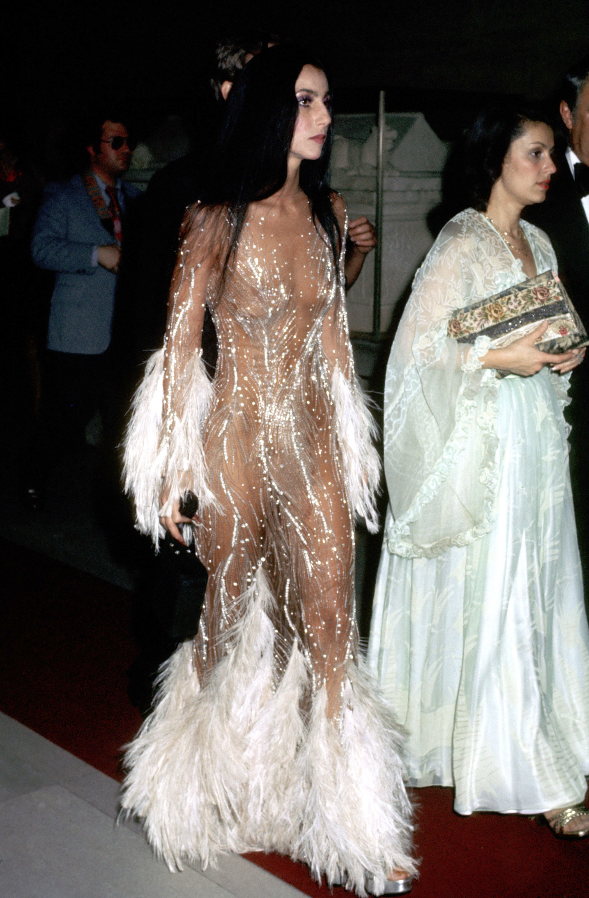
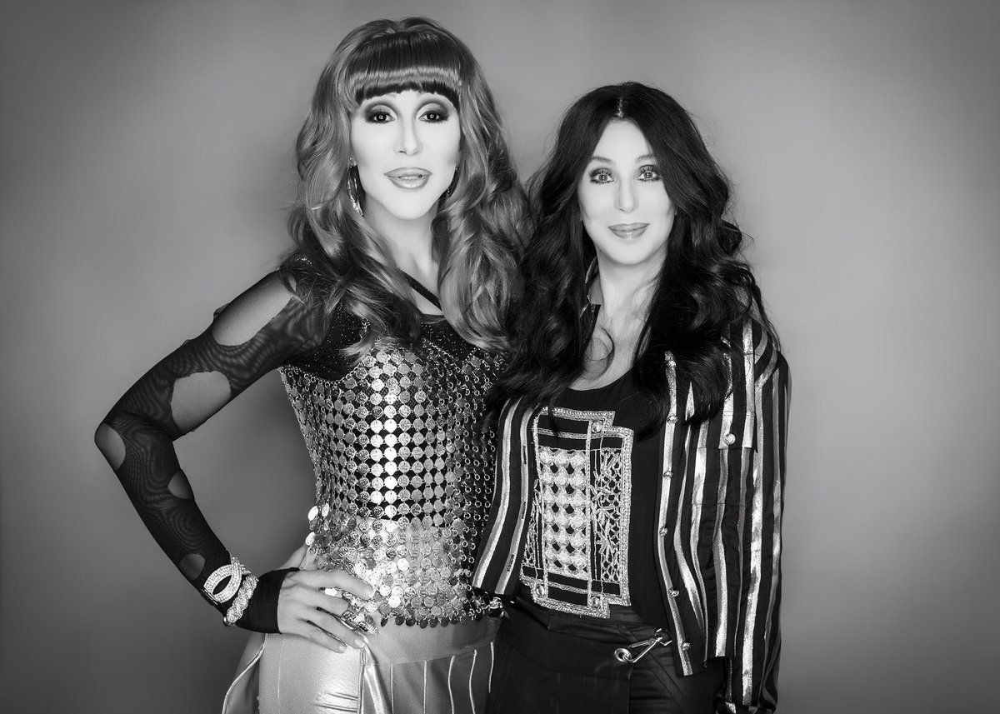

Time magazine's Cady Lang described Cher as a "cultural phenomenon [who] has forever changed the way we see celebrity fashion."[306] Cher emerged as a fashion trendsetter in the 1960s, popularizing "hippie fashion with bell-bottoms, bandanas, and Cherokee-inspired tunics".[307] She began working as a model in 1967 for photographer Richard Avedon after then-Vogue magazine editor Diana Vreeland discovered her at a party for Jacqueline Kennedy that year.[307] Avedon took the controversial photo of Cher in a beaded and feathered nude gown designed by Bob Mackie for the cover of Time magazine in 1975;[308] Billboard magazine's Brooke Mazurek described it as "one of the most recreated and monumental looks of all time."[309] Cher first wore the gown to the 1974 Met Gala. According to Vogue magazine's André Leon Talley, "it was really the first time a Hollywood celebrity attended, and it changed everything. We are still seeing versions of that look on The Met red carpet 40 years later."[309] Billboard wrote that Cher has "transformed fashion and [become] one of the most influential style icons in red carpet history".[309]
Through her 1970s television shows, Cher became a sex symbol with her inventive and revealing Mackie-designed outfits, and fought the network censors to bare her navel.[134] Although Cher has been erroneously attributed to being the first woman to expose her navel on television (e.g. Nichelle Nichols, BarBara Luna and Diana Ewing in the 1960s TV series Star Trek),[310] she was the most prominent to do so[311] since the establishment of the American Code of Practices for Television Broadcasters in 1951,[312] which prompted network censors to ban navel exposure on US television.[313] People dubbed Cher the "pioneer of the belly beautiful".[314] In 1972, after she was featured on the annual "Best Dressed Women" lists, Mackie stated: "There hasn't been a girl like Cher since Dietrich and Garbo. She's a high-fashion star who appeals to people of all ages."[315]
"Time magazine's Cady Lang described Cher as a 'cultural phenomenon [who] has forever changed the way we see celebrity fashion.'[306]"
In May 1999, after the Council of Fashion Designers of America recognized Cher with an award for her influence on fashion, Robin Givhan of the Los Angeles Times called her a "fashion visionary" for "striking just the right note of contemporary wretched excess".[316] Givhan referenced Tom Ford, Anna Sui and Dolce & Gabbana as "[i]nfluential designers [who] have evoked her name as a source of inspiration and guidance."[316] She concluded that "Cher's Native American showgirl sexpot persona now seems to epitomize the fashion industry's rush to celebrate ethnicity, adornment and sex appeal."[316] Vogue proclaimed Cher "[their] favorite fashion trendsetter" and wrote that "[she] set the grounds for pop stars and celebrities today", describing her as "[e]ternally relevant [and] the ruler of outré reinvention".[317] Alexander Fury of The Independent lauded Cher as "the ultimate fashion icon" and traced her influence among female celebrities such as Beyoncé, Jennifer Lopez, and Kim Kardashian, stating that "[t]hey all graduated from the Cher school of never sharing the stage, with anyone, or anything ... They're trying to share the spotlight, to have Cher's success."[318]
The reverence held for Cher by members of the LGBT community has been attributed to her career accomplishments, her sense of style, and her longevity.[331] Cher is considered a gay icon, and has often been imitated by drag queens.[332] According to Salon magazine's Thomas Rogers, "[d]rag queens imitate women like Judy Garland, Dolly Parton and Cher because they overcame insult and hardship on their path to success, and because their narratives mirror the pain that many gay men suffer on their way out of the closet".[332] According to Maclean's magazine's Elio Iannacci, Cher was "one of the first to bring drag to the masses" as she hired two drag queens to perform with her at her Las Vegas residency in 1979.[333] Cher's role as a lesbian in the film Silkwood, as well as her transition to dance music and social activism, have further contributed to her becoming a gay icon.[334] The NBC sitcom Will & Grace acknowledged Cher's status by making her the idol of gay character Jack McFarland. Cher guest-starred as herself twice on the show, in 2000—making the episode "Gypsies, Tramps and Weed" (named after her 1971 song "Gypsys, Tramps & Thieves") Will & Grace's second-highest rating ever—[335] and 2002.[336]